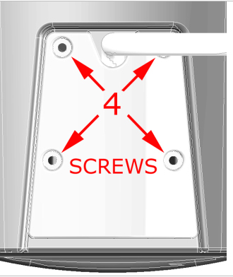
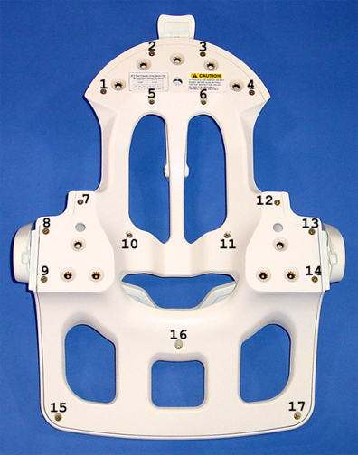
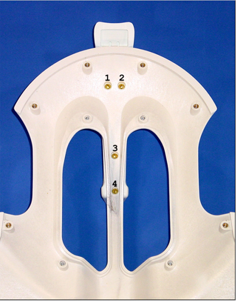
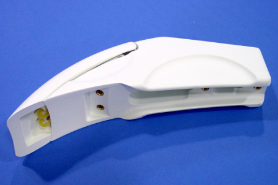

- 00000018WIA3023DD20GYZ
- id_131068065.0
- Feb 22, 2021 2:14:04 AM
1.5T 8-Channel Neurovascular Array Replacement
Personnel Requirements
| Required Persons | Procedure |
| 1 | 45 min. |
Overview
Follow this process to replace Field Replaceable Units (FRUs) for the 1.5T 8-Channel Neurovascular Array Coil by Invivo (M3335M).
Tools and Test Equipment
-
For cable replacement, 1/4 in. flat-blade screwdriver
-
For superior and right/left latch replacement, 1/4 in. flat-blade screwdriver and a No. 2 Phillips screwdriver
Replacement Parts
Refer to the FRU Document.
Procedure
Cable Functionality
Cable Continuity Check
| Notice | |
|---|---|
See Coil Troubleshooting.
Cable Replacement Procedure
| Notice | |
|---|---|
The four coil connector mounting screws are located at the superior end of the coil. Remove these mounting screws as detailed in Remove Four Screws. Remove the coil connector by pulling away from the coil in the superior direction.

The steps for installation of the new cable are the removal steps in reverse order.
Mechanical Parts Replacement
Mechanical Hardware Check
Test the superior and right/left coil latches.
-
Latches must move smoothly and lock securely in place.
-
Latches must not loosen or open during the course of an examination.
Mechanical Replacement of Hardware
Disassembly of Anterior Coil
Remove the anterior coil cover from the anterior coil section as follows:
-
Loosen, but do not remove, the 17 screws that fasten the anterior coil cover to the anterior coil section. (Fastener locations are detailed in Anterior Coil Fastener Locations.)
NoteScrews numbered 5, 6, 10, 11 and 16 are longer than the other screws. (See Anterior Coil Fastener Locations.)
Figure 2. Anterior Coil Fastener Locations 
-
Carefully lift the anterior coil section away from the anterior coil cover.
-
Place the anterior coil section aside, being careful to keep the screws stored in their respective holes.
-
During FRU replacement and cover reinstallation, ensure that the electronics in the anterior coil section are not disturbed.
The steps for cover reinstallation are simply the reverse order of the steps described for removal.
Replacement of Right/Left Latch
With the Anterior Coil disassembled, open the Right/Left Latch Assembly FRU package, and follow the assembly instructions below in the Media File.
Replacement of Superior Latch
-
Remove the four screws that fasten the superior latch assembly to the anterior coil cover. (The four fastener locations are shown in Superior Latch Assembly Fastener Locations.)
Figure 4. Superior Latch Assembly Fastener Locations 
-
Replace the superior latch using the Superior Latch Assembly shown in Superior Latch.
Figure 5. Superior Latch 
Coil Replacement
No instructions required.